Ötedere Vadisi
Ötedere Vadisi, Gesi’nin yanı başında, İldem konutlarının güney tarafında Belağası (Balagesi) ile Kuruköprü arasında yer almaktadır. Vadiye Kayseri’yi Gesi’ye bağlayan kara yolu üzerinden ulaşılabilmektedir. Vadinin girişinde şu an az sayıda ev bulunan bir köy bulunmaktadır. Vadinin iç taraflarında çevresi kalın duvarlarla çevrili bir yer altı yapısı yer almaktadır, rivayete göre burası Cüzzam Hastanesi olarak da kullanılmıştır. Bölge halkı tarafından vadiye bu nedenle “Cüzzam Vadisi” de denilmektedir.
Vadi içerisinden bir dere akmaktadır. Dereyi besleyen suların eriyen karlardan geldiği yaz ortasında derenin kurumasından çıkarılabilir. Vadi yaklaşık 14 km uzunluğunda olup içerisinde çok sayıda antik yerleşim birimi barındırmaktadır.
Bu yerleşim yerlerinden en önemlisi “Hasan Efengi Yer Altı Şehri”dir. 7 kat olduğu rivayet edilen şehrin ilk üç katına kadar bizzat indim, dar koridorlar ve küçük odalar birbirlerine bağlanmış durumda. Vadinin her iki yakasını birleştiren ve şu anda yıkık durumda olan iki köprünün kalıntıları da burada yer almaktadır.
Bölgede çok sayıda kaçak kazı yapıldığını gezi sırasında gördüm. Yapılan bu kazılar sonucu ortaya çıkan birkaç parça yapıyı inceleme fırsatım oldu, özellikle mermerden yapılmış bir sütun başlığı dikkatimi çekti, Roma ya da Bizans dönemine ait olabileceği kanaatindeyim.
Yörede yer alan birçok yer altı şehri gibi bu yer altı şehrinin de tarih öncesi çağlara ait olduğu tahmin edilmektedir. Taş işçiliğinde usta olan antik çağ medeniyetlerinin böylesi karmaşık yer altı şehirlerini oymuş olmaları hiç de yadırganacak bir durum değildir.
Köylülerin anlattığına göre vadi içerişinde kaçak bal arılarının bal yaptığı alanlar bulunuyor, köylüler her yıl buradan çok lezzetli petekler dolusu bal alırlarmış.
Vadi içerisinde en az bir tane kilise bulunmaktadır, bununla birlikte direk yutan şelalesi mevkiinde bir yer altı şehri ve bir de anıtsal mezar alanı bulunmaktadır. Bu mezar alanında yunan alfabesi ile yazılmış metinler bulunmaktadır.
Vadi kuzey – güney doğrultusunda uzanmaktadır ve batı yakasında antik bir taş ocağı olduğunu düşündüğüm bir bölge yer almaktadır. Beni bu düşünceye iten şey, bahsettiğim bölgede düzenli olarak kesilmiş ve istiflenmiş taşların varlığıdır.
Vadi içerisinde irili ufaklı 3-4 tane şelale yer almaktadır. Bu şelaleler özellikle bahar aylarında oldukça güçlü akmaktadırlar. Vadi içerisinde akan suyun antik yerleşimciler tarafından özel kanallar vasıtası ile yer altı şehri içerisinden akıtıldığını görülmektedir.
Sonbahar aylarında vadide bolca “alıç” ya da doğuda bilindiği adı ile “yumuşan” bulunabilir. Kırmızı, sarı, turuncu, bol etli ve sulu bu yemişler hafif mayhoş tadıyla yiyenlerin ağzında ekşimsi bir lezzet bırakmaktadır.
Vadinin doğu yamacının zirvesinde bir tümülüs yer almaktadır. Kime ait olduğu, ne zaman yapıldığı bilinmemekle beraber definecilerin uğrak yeri olduğu bilinmektedir.
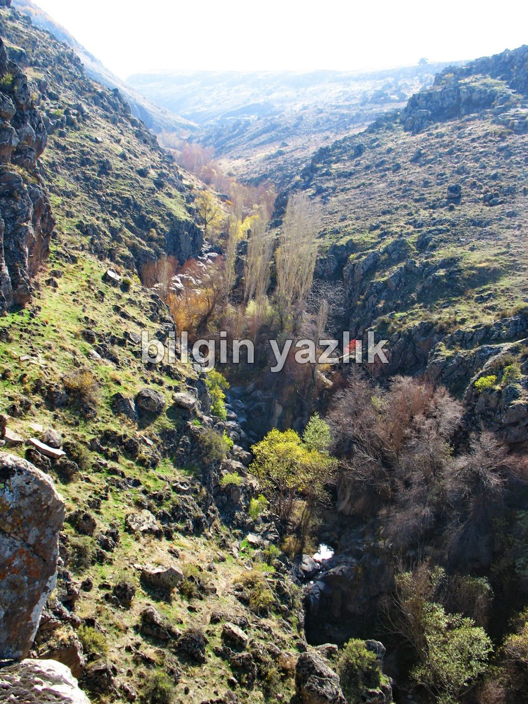
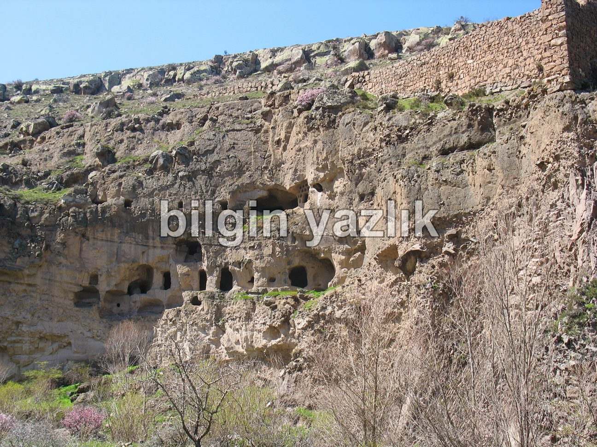
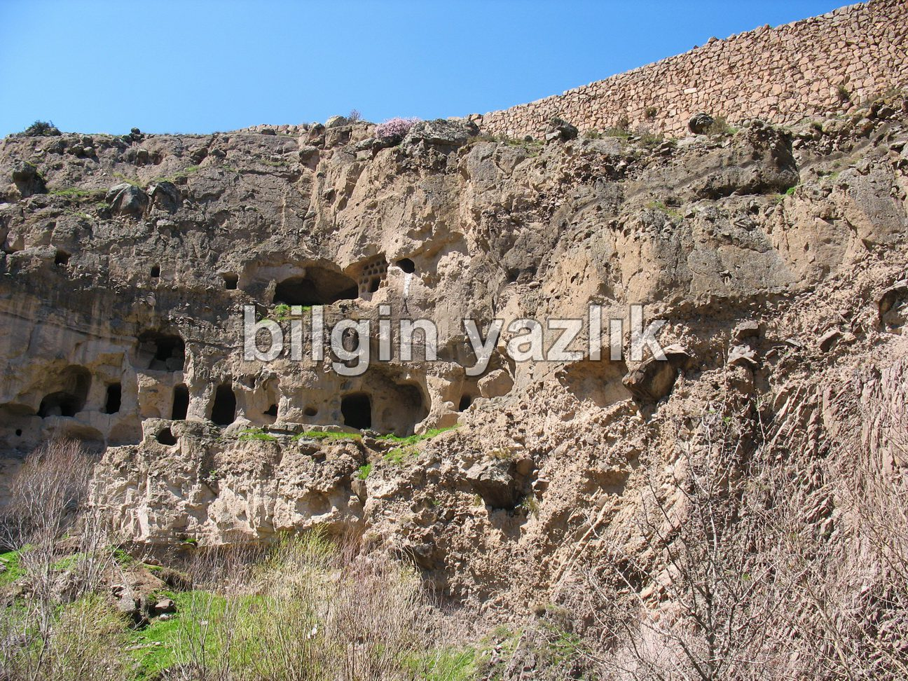
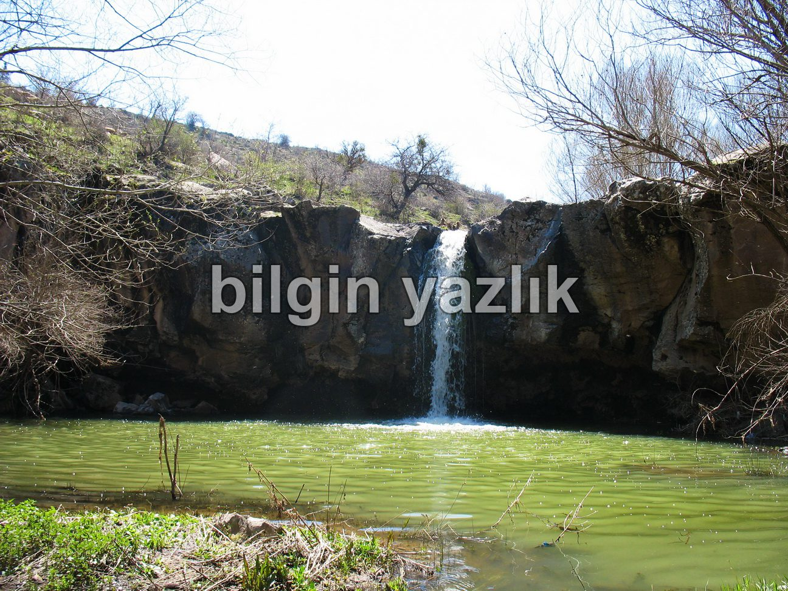
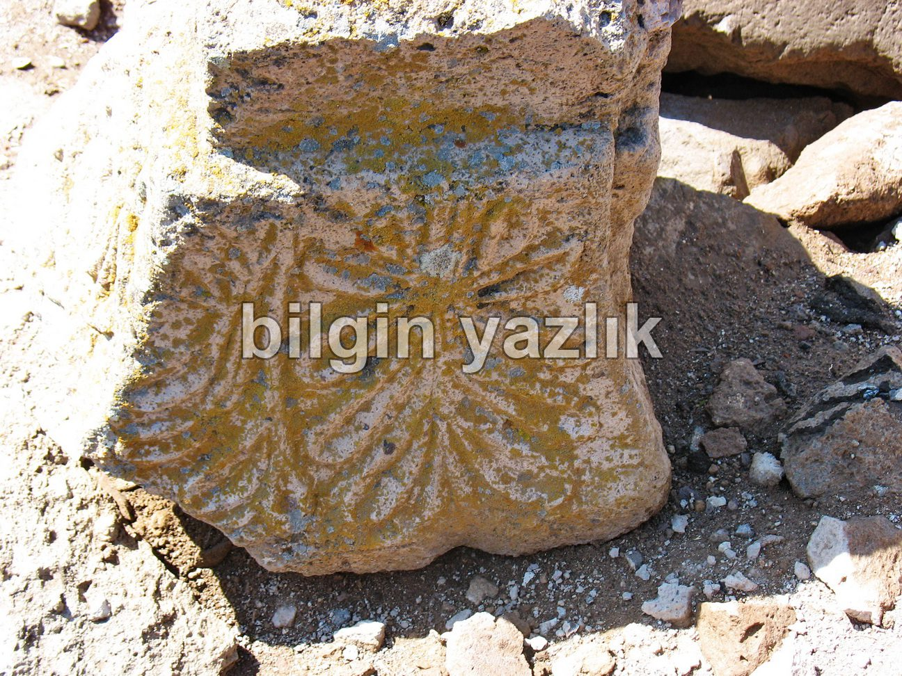
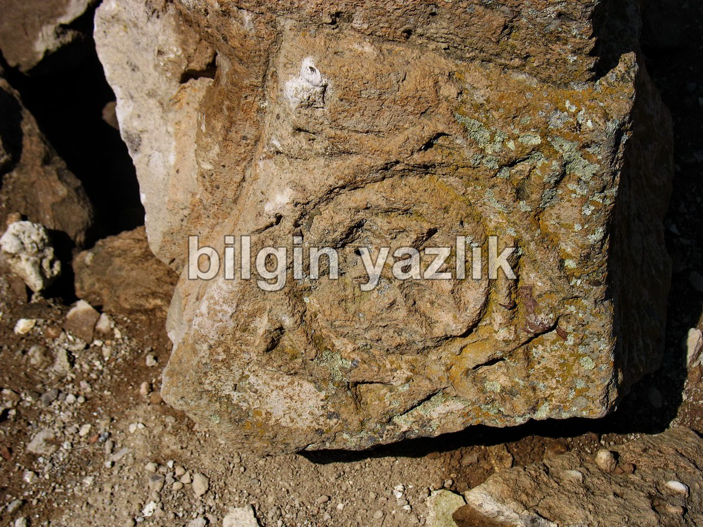
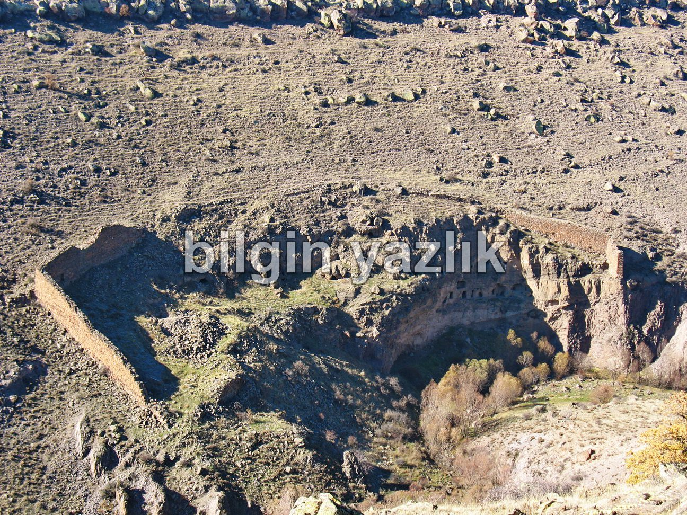
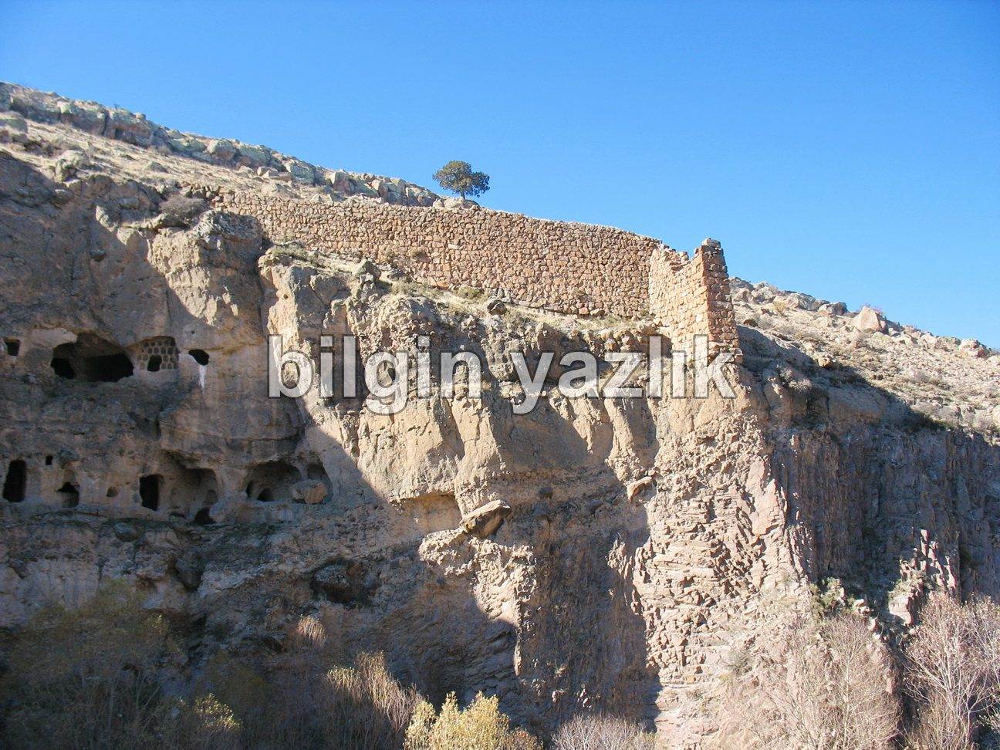
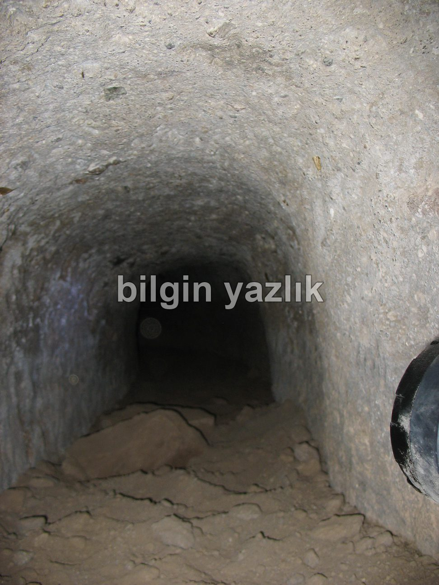
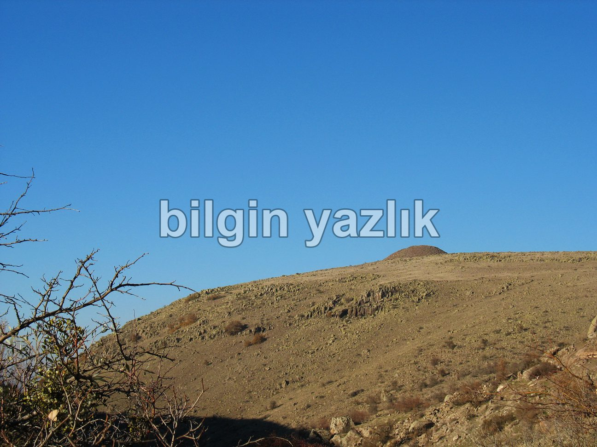
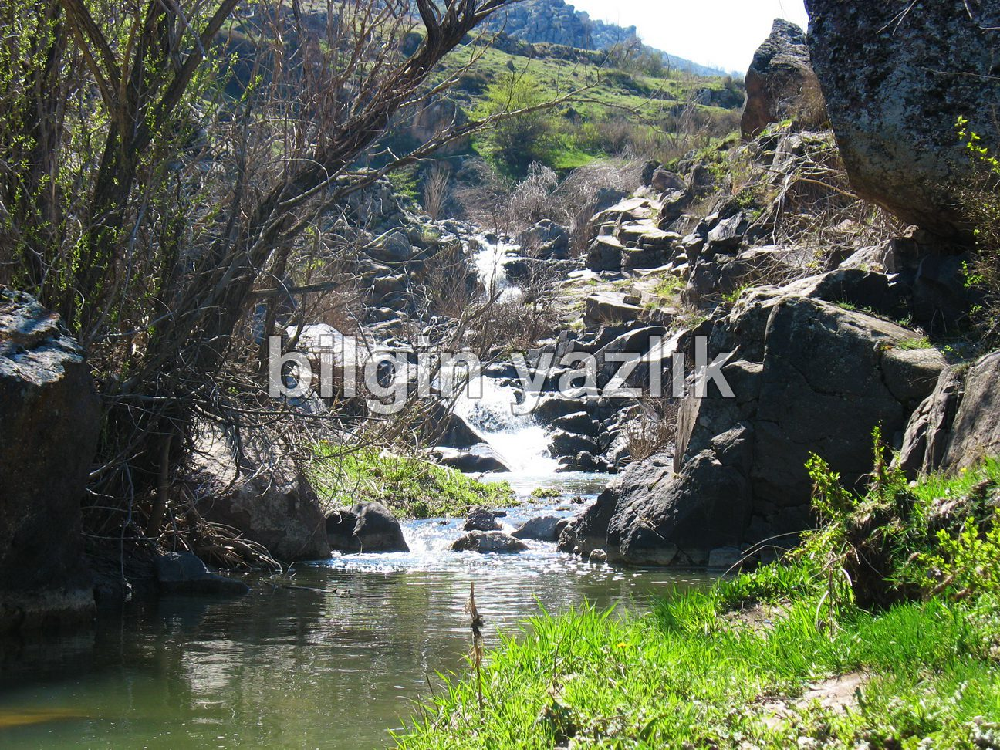
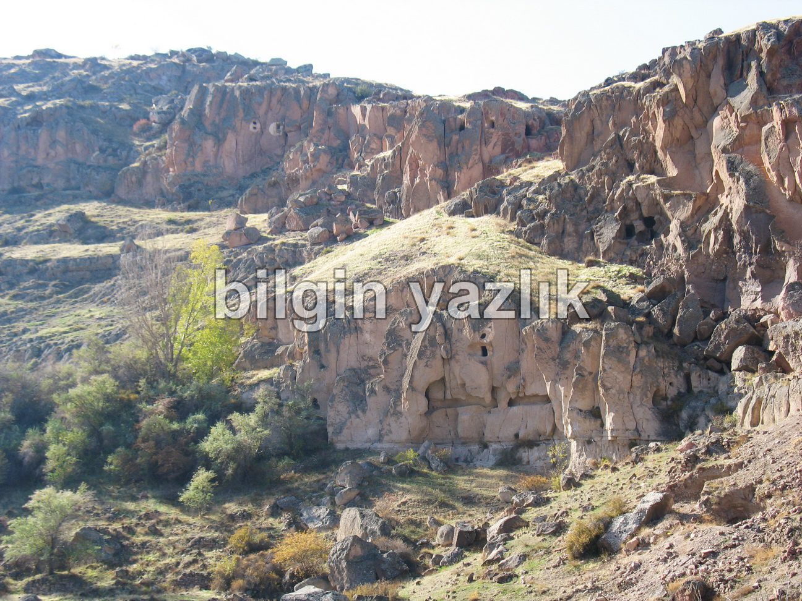
Bu yazı taliyol arşivinden taşınmıştır. · özgün kayıt